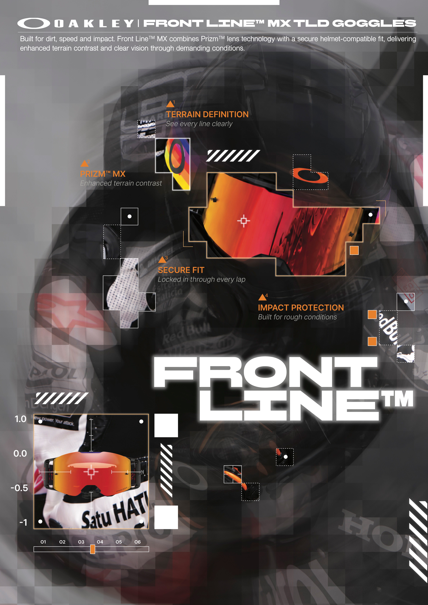
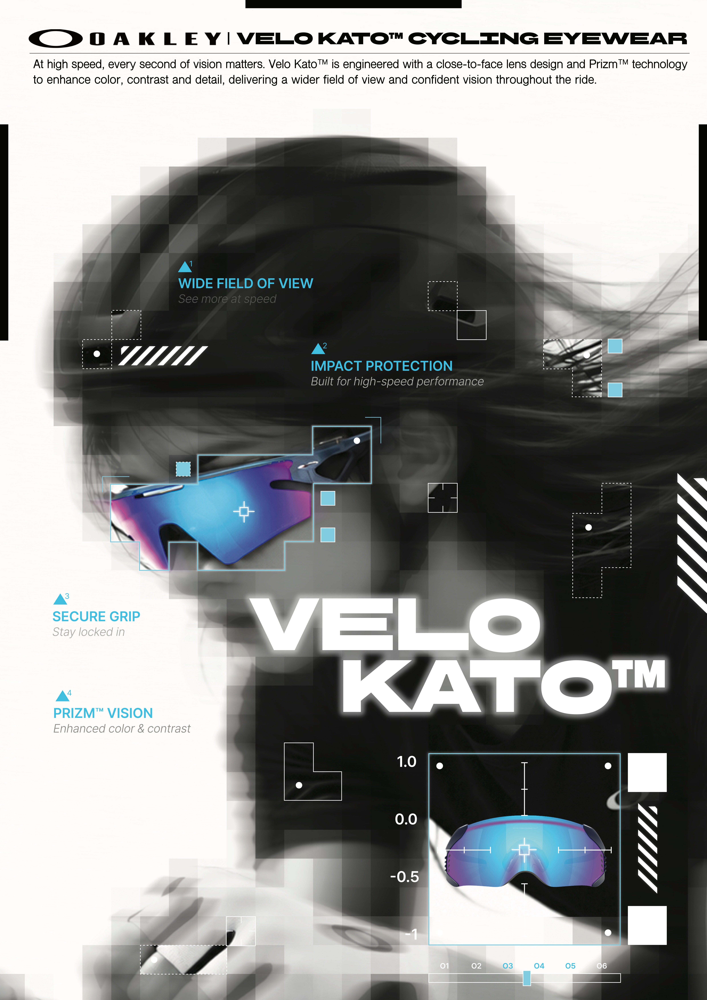

overview
오클리의 모토크로스 고글을 중심으로, 빠른 속도와 거친 주행 환경의 분위기를 담아낸 광고 포스터다. 어두운 배경에 오렌지 레드 계열의 렌 즈 컬러를 대비시켜 제품이 돋보이도록 했으며, 분할된 그래픽과 잔상 효과를 활용해 역동적인 움직임을 표현했다. 렌즈 기술과 선명한 시야, 안정적인 착용감, 충격 보호 등 고글의 주요 기능을 그래픽 요소와 함께 구성해 한눈에 확인할 수 있도록 했다. 또한 모토크로스의 강렬한 이 미지와 제품의 기능적인 특징이 함께 드러나도록 디자인하였다.

overview
오클리 사이클 고글의 넓은 시야와 선명한 렌즈 성능을 중심으로 구성한 광고 포스터다. 흑백 이미지 위에 블루·퍼플 계열의 렌즈 컬러를 포인 트로 사용해 제품이 돋보이도록 했고, 빠르게 흐르는 듯한 잔상과 그래픽 요소를 더해 사이클 주행의 속도감을 표현했다. 넓은 시야와 안정 적인 착용감, 선명한 시야 확보 등 제품의 주요 기능이 자연스럽게 드러나도록 구성했으며, 사이클 주행에서 느껴지는 속도감과 제품의 기능 성을 함께 보여주도록 디자인했다.